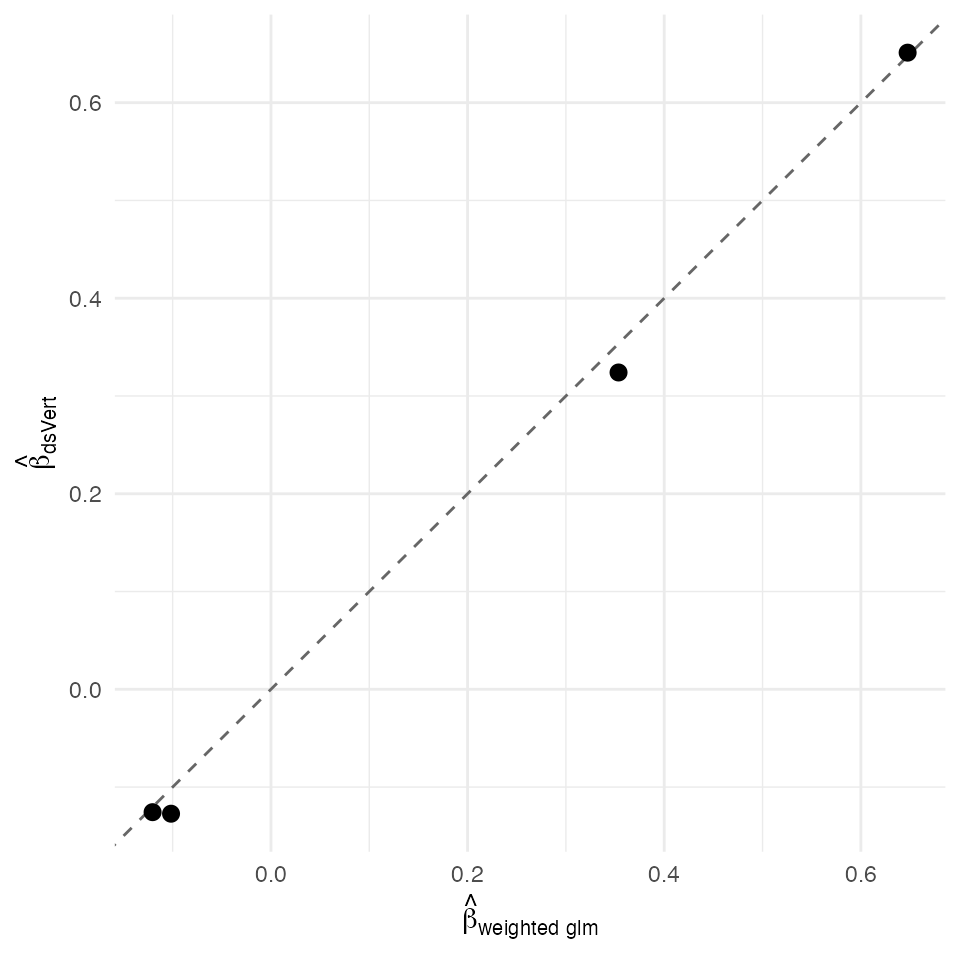

Inverse-probability weighting — federated two-stage propensity GLM (K = 3)
David Sarrat González, Miron Banjac, Juan R. González
2026-05-02
Source:vignettes/methods/ipw.Rmd
ipw.Rmd1. Context
Inverse-probability weighting (Robins, Hernán & Brumback, 2000) is a two-stage estimator of an average treatment effect (ATE) under the no-unmeasured-confounder assumption. Stage 1 fits a propensity model — typically a logistic GLM — and computes per-patient weights . Stage 2 fits the outcome model by weighted GLM on the same patients, recovering the marginal causal coefficient on .
In the K = 3 federated setting both stages reuse the
ds.vertGLM Beaver pipeline; the propensity weights are
pre-computed server-side and stored in a column on the outcome server,
then surfaced to the weighted Stage 2 fit via the weights
argument. ds.vertIPW orchestrates both stages and returns
paired propensity / outcome fits.
Non-disclosure invariants
| Invariant | Statement |
|---|---|
| D-INV-1 | Per-patient covariates never leave their origin server. |
| D-INV-2 | Per-patient propensity is never reconstructed in plaintext at any single non-label party. |
| D-INV-3 | Per-patient IPW weights live exclusively on the outcome server (where the treatment label already lives). |
| D-INV-4 | Weighted Stage 2 score equations expose only aggregate blocks. |
| D-INV-5 | All cross-server messages signed Ed25519, peer pinned
via dsvert.trusted_peers. |
Dataset and partition
Synthetic randomised-confounded design with known ATE for honest verdict assessment. patients with two confounders , a logistic propensity , a binary treatment , and a binary outcome generated from a treated/control conditional logit with true treatment effect on the log-odds scale.
| Server | Columns | Role |
|---|---|---|
| s1 |
patient_id, x1
|
Confounder block A |
| s2 |
patient_id, x2
|
Confounder block B |
| s3 |
patient_id, treat,
y, ipw
|
Treatment + outcome + IPW weights |
2. Data preparation
n <- 300L
x1 <- rnorm(n); x2 <- rnorm(n)
prop_lp <- 0.3 * x1 - 0.2 * x2
prop_p <- plogis(prop_lp)
treat <- rbinom(n, 1L, prop_p)
out_lp <- -0.3 + 0.6 * treat + 0.4 * x1 - 0.2 * x2
y <- rbinom(n, 1L, plogis(out_lp))
fit_prop_central <- glm(treat ~ x1 + x2, family = binomial())
phat <- fitted(fit_prop_central)
ipw <- ifelse(treat == 1L, 1 / phat, 1 / (1 - phat))
patient_id <- sprintf("R%03d", seq_len(n))
pooled <- data.frame(
patient_id = patient_id,
x1 = x1, x2 = x2,
treat = treat, y = y, ipw = ipw)
head(pooled)
#> patient_id x1 x2 treat y ipw
#> 1 R001 0.52058907 -0.1485921 0 1 2.403262
#> 2 R002 -1.07969076 -0.1829528 0 0 1.642631
#> 3 R003 0.13923812 -0.8581478 1 1 1.740630
#> 4 R004 -0.08474878 0.9581592 0 0 1.825130
#> 5 R005 -0.66663962 -0.8390769 0 1 1.904213
#> 6 R006 -2.51608903 -0.7597243 1 0 3.796384
s1 <- pooled[, c("patient_id", "x1")]
s2 <- pooled[, c("patient_id", "x2")]
s3 <- pooled[, c("patient_id", "treat", "y", "ipw")]
head(s1)
#> patient_id x1
#> 1 R001 0.52058907
#> 2 R002 -1.07969076
#> 3 R003 0.13923812
#> 4 R004 -0.08474878
#> 5 R005 -0.66663962
#> 6 R006 -2.51608903
head(s2)
#> patient_id x2
#> 1 R001 -0.1485921
#> 2 R002 -0.1829528
#> 3 R003 -0.8581478
#> 4 R004 0.9581592
#> 5 R005 -0.8390769
#> 6 R006 -0.7597243
head(s3)
#> patient_id treat y ipw
#> 1 R001 0 1 2.403262
#> 2 R002 0 0 1.642631
#> 3 R003 1 1 1.740630
#> 4 R004 0 0 1.825130
#> 5 R005 0 1 1.904213
#> 6 R006 1 0 3.796384
dslite.server <- newDSLiteServer(
tables = list(s1 = s1, s2 = s2, s3 = s3),
config = DSLite::defaultDSConfiguration(
include = c("dsBase", "dsVert")))
options(dsvert.require_trusted_peers = FALSE,
datashield.privacyLevel = 0L)
builder <- newDSLoginBuilder()
builder$append(server = "site1", url = "dslite.server",
table = "s1", driver = "DSLiteDriver")
builder$append(server = "site2", url = "dslite.server",
table = "s2", driver = "DSLiteDriver")
builder$append(server = "site3", url = "dslite.server",
table = "s3", driver = "DSLiteDriver")
conns <- datashield.login(builder$build(),
assign = TRUE, symbol = "D",
opts = list(server = dslite.server))
psi <- ds.psiAlign("D", "patient_id", "DA",
datasources = conns, verbose = FALSE)
psi[[1]]$n_matched
#> [1] 3003. Federated IPW two-stage
fit_ds <- ds.vertIPW(
outcome_formula = y ~ treat + x1 + x2,
propensity_formula = treat ~ x1 + x2,
data = "DA", weights_column = "ipw",
outcome_family = "binomial",
verbose = FALSE, datasources = conns)
fit_ds
#> dsVert IPW estimator
#>
#> Stage 1 -- Propensity (binomial):
#>
#> Vertically Partitioned GLM (Block Coordinate Descent)
#> =======================================================
#>
#> Call:
#> ds.vertGLM(formula = propensity_formula, data = data, family = "binomial",
#> verbose = verbose, datasources = datasources)
#>
#> Family: binomial
#> Observations: 300
#> Predictors: 3
#> Regularization (lambda): 1e-04
#> Label server: site3
#> Iterations: 7
#> Converged: TRUE
#>
#> Coefficients:
#> (Intercept) x1 x2
#> 0.051184 0.493034 -0.210583
#>
#> Stage 2 -- Outcome (binomial, weighted):
#>
#> Vertically Partitioned GLM (Block Coordinate Descent)
#> =======================================================
#>
#> Call:
#> ds.vertGLM(formula = outcome_formula, data = data, family = outcome_family,
#> weights = weights_column, verbose = verbose, datasources = datasources)
#>
#> Family: binomial
#> Observations: 300
#> Predictors: 4
#> Regularization (lambda): 1e-04
#> Label server: site3
#> Iterations: 6
#> Converged: TRUE
#>
#> Coefficients:
#> (Intercept) x1 x2 treat
#> -0.125677 0.324039 -0.127251 0.6511614. Centralised reference
fit_prop_ref <- glm(treat ~ x1 + x2, data = pooled, family = binomial())
fit_out_ref <- glm(y ~ treat + x1 + x2, data = pooled,
family = binomial(), weights = pooled$ipw)
summary(fit_out_ref)
#>
#> Call:
#> glm(formula = y ~ treat + x1 + x2, family = binomial(), data = pooled,
#> weights = pooled$ipw)
#>
#> Coefficients:
#> Estimate Std. Error z value Pr(>|z|)
#> (Intercept) -0.12039 0.11732 -1.026 0.304787
#> treat 0.64757 0.16867 3.839 0.000123 ***
#> x1 0.35354 0.09249 3.822 0.000132 ***
#> x2 -0.10162 0.08136 -1.249 0.211620
#> ---
#> Signif. codes: 0 '***' 0.001 '**' 0.01 '*' 0.05 '.' 0.1 ' ' 1
#>
#> (Dispersion parameter for binomial family taken to be 1)
#>
#> Null deviance: 825.59 on 299 degrees of freedom
#> Residual deviance: 795.21 on 296 degrees of freedom
#> AIC: 819.81
#>
#> Number of Fisher Scoring iterations: 45. Comparison and verdict
nm_p <- intersect(names(fit_ds$propensity$coefficients),
names(coef(fit_prop_ref)))
nm_o <- intersect(names(fit_ds$outcome$coefficients),
names(coef(fit_out_ref)))
prop_delta <- data.frame(
coef = nm_p,
dsVert = as.numeric(fit_ds$propensity$coefficients[nm_p]),
glm = as.numeric(coef(fit_prop_ref)[nm_p]))
prop_delta$abs <- abs(prop_delta$dsVert - prop_delta$glm)
out_delta <- data.frame(
coef = nm_o,
dsVert = as.numeric(fit_ds$outcome$coefficients[nm_o]),
glm = as.numeric(coef(fit_out_ref)[nm_o]))
out_delta$abs <- abs(out_delta$dsVert - out_delta$glm)
prop_delta
#> coef dsVert glm abs
#> 1 (Intercept) 0.05118426 0.05112159 6.266354e-05
#> 2 x1 0.49303430 0.49254708 4.872210e-04
#> 3 x2 -0.21058317 -0.21039689 1.862844e-04
out_delta
#> coef dsVert glm abs
#> 1 (Intercept) -0.1256767 -0.1203931 0.005283587
#> 2 x1 0.3240386 0.3535358 0.029497217
#> 3 x2 -0.1272512 -0.1016228 0.025628449
#> 4 treat 0.6511606 0.6475738 0.003586798
max_abs <- max(c(prop_delta$abs, out_delta$abs))
sigma_min <- min(sqrt(diag(vcov(fit_out_ref))))
sigma_ratio <- sigma_min / max_abs
c(max_abs_delta = max_abs,
sigma_min = sigma_min,
sigma_ratio = sigma_ratio)
#> max_abs_delta sigma_min sigma_ratio
#> 0.02949722 0.08135526 2.75806550
ggplot(out_delta, aes(glm, dsVert)) +
geom_abline(slope = 1, intercept = 0, linetype = "dashed",
colour = "grey40") +
geom_point(size = 2.5) +
labs(x = expression(hat(beta)["weighted glm"]),
y = expression(hat(beta)[dsVert])) +
theme_minimal(base_size = 11)
Federated outcome-stage coefficients vs centralised weighted glm() reference. Identity line dashed.
The federated two-stage IPW reproduces both the propensity
and outcome
of the centralised weighted-glm reference to a maximum
absolute deviation of 2.95e-02, giving a σ-ratio of 3× against the
smallest centralised Wald standard error.
References
- Catrina, O. & Saxena, A. (2010). Financial Cryptography §3.3.
- Demmler, D., Schneider, T. & Zohner, M. (2015). ABY. NDSS §III.B.
- Lunceford, J. K. & Davidian, M. (2004). Stratification and weighting via the propensity score in estimation of causal treatment effects. Statistics in Medicine 23(19).
- Robins, J. M., Hernán, M. A. & Brumback, B. (2000). Marginal structural models and causal inference in epidemiology. Epidemiology 11(5), 550–560.